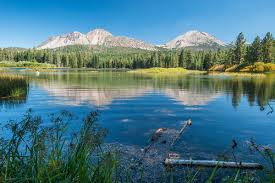
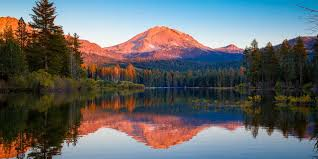
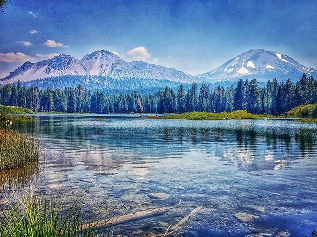

Lassen Peak
- 
- 
- 
Lassen(10,500ft). Mt. Lassen last erupted in 1917 and is the largest plug dome volcano in the world. Lassen National Park is one of the few areas in the world where all 4 types of volcanos can be found (plug dome, shield, cinder cone, and strato).
Lassen Peak, commonly referred to as Mount Lassen, is the southernmost active volcano in the Cascade Range of the Western United States. Located in the Shasta Cascade region of Northern California, it is part of the Cascade Volcanic Arc, which stretches from southwestern British Columbia to northern California. Lassen Peak reaches an elevation of 10,457 feet (3,187 m), standing above the northern Sacramento Valley. It supports many flora and fauna among its diverse habitats, which are subject to frequent snowfall and reach high elevations.
On May 22, 1915, a powerful explosive eruption at Lassen Peak devastated nearby areas, and spread volcanic ash as far as 280 miles (450 km) to the east. This explosion was the most powerful in a series of eruptions from 1914 through 1917. Lassen Peak and Mount St. Helens were the only two volcanoes in the contiguous United States to erupt during the 20th century. Lassen Volcanic National Park, which encompasses an area of 106,372 acres (430.47 km2), was created to preserve the areas affected by the eruption, for future observation and study, and to protect the nearby volcanic features.